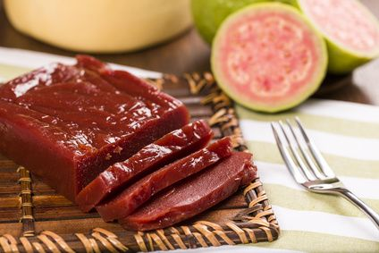
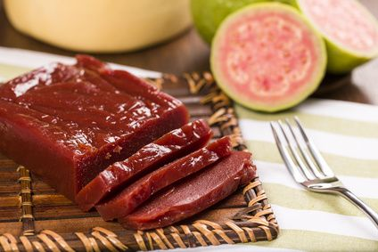

The brigadeiro tells a tale of Brazilian joy, wrapped in chocolate and nostalgia, creating a timeless delight for every celebration. Goiabada, a sweet symphony of ripe guavas, captures the essence of Brazilian orchards in each spoonful, a journey of tropical flavors. Brownies, a decadent fusion of chocolate and indulgence, narrate the story of rich, gooey bliss in every delectable bite. The donut, a global icon of sweetness, spins a story of delightful circles, inviting you to savor the joy in each glazed moment. Rapadura, a piece of Brazilian heritage, embodies the art of transforming sugarcane into a rustic yet exquisite confection, preserving tradition in every bite.
With every bite of our sweets, you savor not only an irresistible treat but also the tradition and passion woven into the story of each recipe. At Good Candy, each sweet is more than a simple delicacy; it's a tale of quality, flavor, and dedication. Be part of our story and let us sweeten the special moments of your life. Come create delicious memories with us at Good Candy!

Step into the world of Good Candy, where passion and creativity converge to craft an array of sweets that transcend the ordinary. Our commitment to quality and authenticity is reflected in every handmade delicacy. Whether you're indulging in the smoothness of brigadeiros, savoring the fruity notes of goiabada, or delighting in the richness of brownies, each treat is a testament to our dedication. Join us on this journey of flavors, and let Good Candy be the sweet companion to your cherished moments